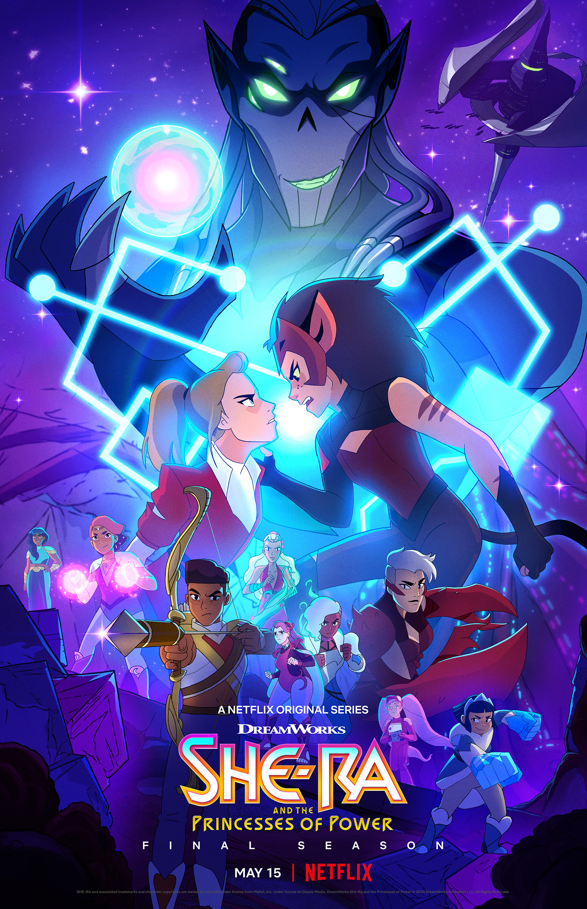

She-Ra and the Princesses of Power
7/10
I like this show. The animation is cool and the characters are great. My issue is that the only gay stuff with Adora and Catra happens in the last 5 minutes of the last episode. This show is amazing at queerbaiting and stringing me along. Why did it take so fucking long to get gay? The fact that we had to wait that long is homophobic.